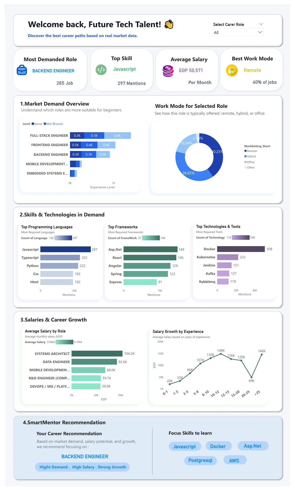
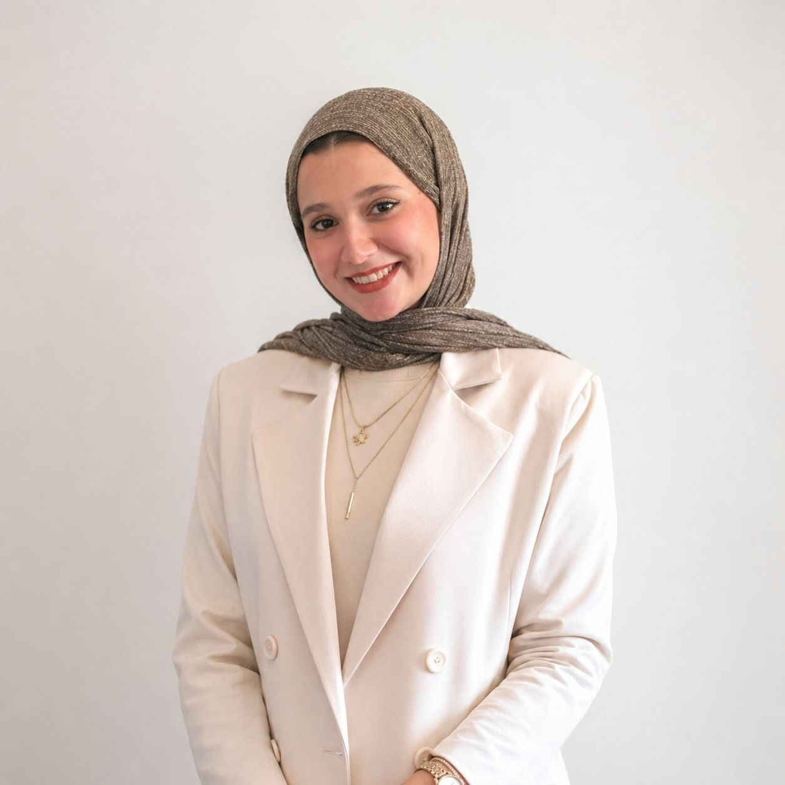
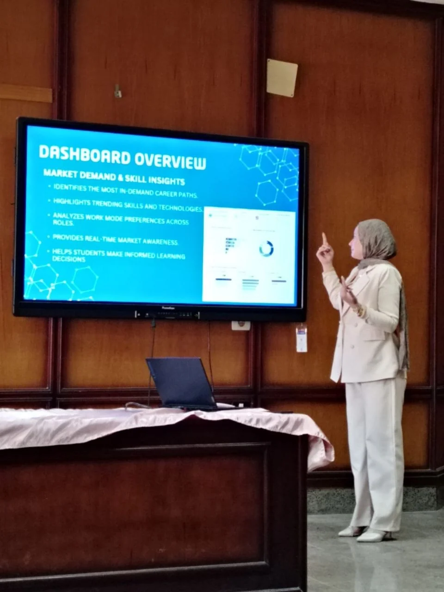
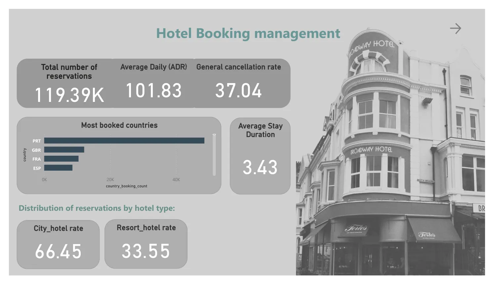
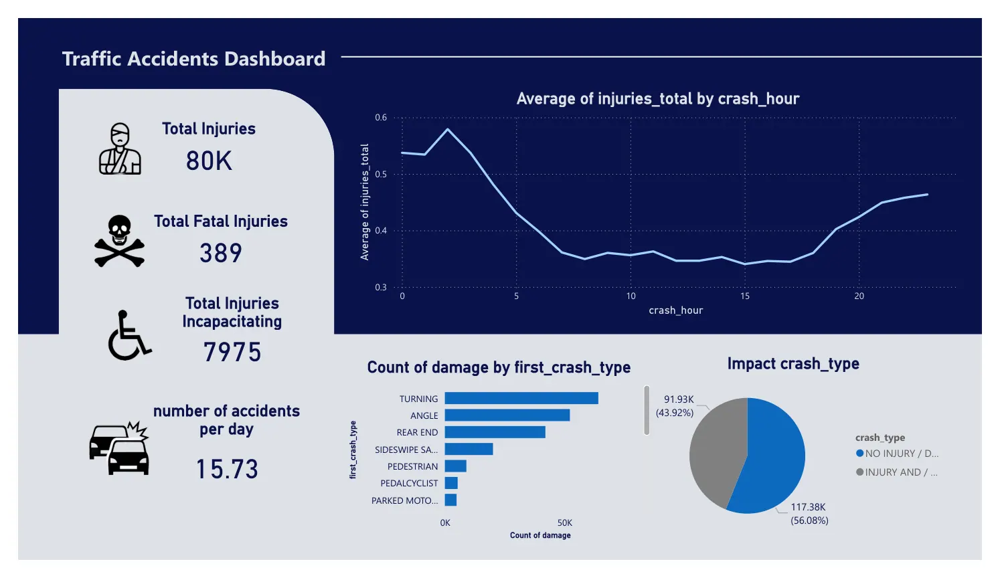
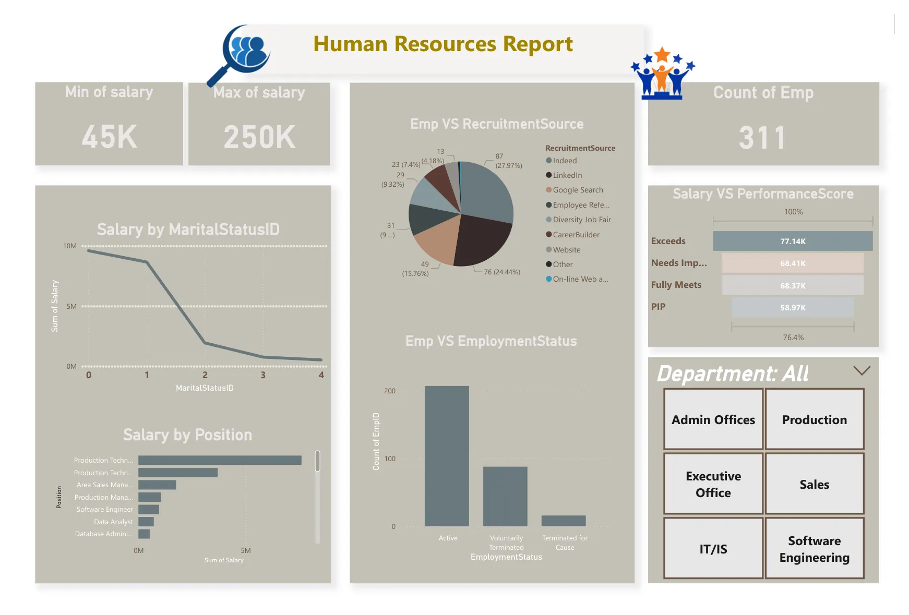
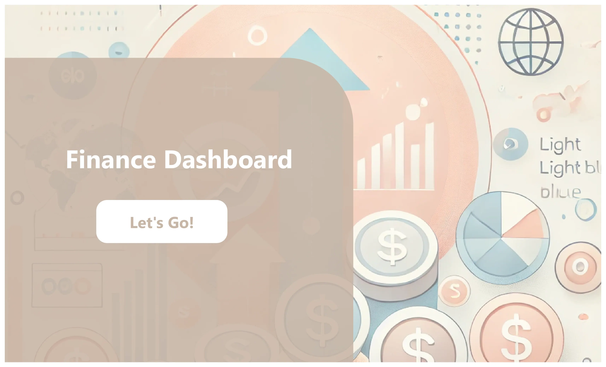
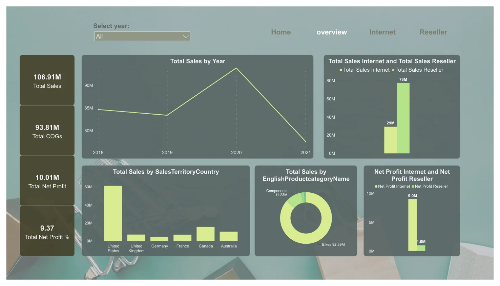

GRADUATION PROJECT · JUL 2026 · A+SmartMentor — Job Market Analytics
Egyptian tech career analytics and data-driven student guidance.
Read full case study ↗Hello, I'm
I turn complex datasets into clear insights, thoughtful dashboards, and smarter decisions — using Power BI, SQL, Python, and a curiosity for the story behind the numbers.

I'm a Computer Science graduate from Tanta University (2026), focused on data analytics and business intelligence. Through academic projects and structured training, I've worked with data preparation, dimensional modeling, KPI design, DAX, and dashboard development.
I enjoy connecting technical analysis with practical business questions — from understanding technology job markets to examining sales performance and profitability.

Real academic and training projects, explained as individual case studies. Dates other than the July 2026 graduation project are approximate portfolio sequencing, not verified completion dates.

GRADUATION PROJECT · JUL 2026 · A+Egyptian tech career analytics and data-driven student guidance.
Read full case study ↗
APR 2026 · APPROX.Analyzed reservations, cancellations, average daily rates, market channels and booking lead time to inform hotel revenue management.
Read full case study ↗
FEB 2026 · APPROX.Examined accident severity, crash types, time-of-day patterns, trafficway conditions and contributing causes to identify safety priorities.
Read full case study ↗
NOV 2025 · APPROX.Explored workforce composition, recruitment sources, salary distributions, employee status and performance categories.
Read full case study ↗
SEP 2025 · APPROX.Explored investment behavior across 40 survey participants, examining preferred investment instruments, investment horizons and knowledge sources.
Read full case study ↗
MAY 2025 · APPROX.SQL Server warehouse analysis comparing internet and reseller channels.
Read full case study ↗First-year university coursework exploring Arduino-based hardware and software integration.
Read full case study ↗Power BI · Power Query · DAX · KPI Development · Exploratory Data Analysis · Dashboard Design · Data Storytelling · Excel
Data Cleaning · Data Transformation · SQL · SQL Server · SSMS · SQL Views · Data Warehousing · Dimensional Modeling · Star Schema · Data Validation
Python · Pandas · SQL · C/C++ Fundamentals · Arduino · Microsoft Office
Arabic — Native · English — Professional working proficiency (self-reported level to confirm)
Analytical Thinking · Problem Solving · Communication · Team Collaboration · Presentation · Attention to Detail · Documentation · Continuous Learning
I'm interested in junior data analyst, business intelligence, reporting, and practical training opportunities in the UAE.
Email me ↗